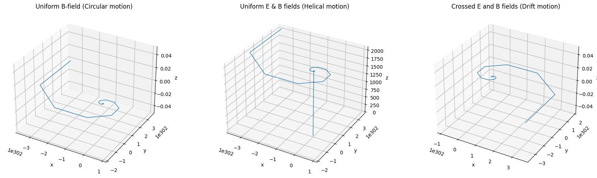
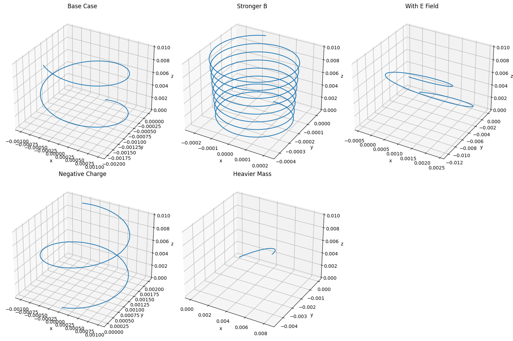

Problem 1
1. Systems Where the Lorentz Force Is Crucial
Here are some key systems and technologies that rely heavily on the Lorentz force:
A. Particle Accelerators
- How it works: Charged particles (e.g., protons, electrons) are accelerated using electric fields and steered using magnetic fields.
- Lorentz Force Role:
- \(\vec{F} = q\vec{E}\): Electric fields provide energy to accelerate particles.
- \(\vec{F} = q\vec{v} \times \vec{B}\): Magnetic fields curve particle trajectories, guiding them in circular or helical paths.
- Example: The Large Hadron Collider (LHC) uses powerful magnets to steer protons at near-light speeds.
B. Mass Spectrometers
- How it works: Separate ions based on their mass-to-charge ratio.
- Lorentz Force Role:
- Ions pass through magnetic or electric fields and are deflected based on their velocity and charge.
- The trajectory curvature gives information about their mass.
- Key Equation: \(\(r = \frac{mv}{qB}\)\) (radius of curvature of the particle path).
- Application: Identifying chemical compounds or isotopes.
C. Plasma Confinement (e.g., Tokamaks)
- How it works: Magnetic fields are used to trap and control high-energy plasma in fusion reactors.
- Lorentz Force Role:
- Magnetic fields confine the charged plasma particles into toroidal (donut-shaped) paths to prevent them from touching reactor walls.
- Importance: Maintains high-temperature, high-density conditions necessary for nuclear fusion.
D. Cathode Ray Tubes (CRTs)
- How it works: Beams of electrons are steered by magnetic or electric fields to form images.
- Lorentz Force Role:
- Electric fields control acceleration.
- Magnetic fields control the direction of electron beams.
E. Astrophysics (e.g., Solar Wind Interaction with Magnetic Fields)
- How it works: Solar particles interact with planetary magnetic fields (like Earth's magnetosphere).
- Lorentz Force Role:
- Governs the motion of cosmic rays and solar wind particles.
- Explains phenomena like auroras and magnetic storms.
2. Relevance of Electric (\(\vec{E}\)) and Magnetic (\(\vec{B}\)) Fields
Electric Fields (\(\vec{E}\))
- Direct acceleration: Cause particles to gain kinetic energy in the direction of the field.
- Straight-line influence: Change particle speed without necessarily curving their path (in uniform fields).
- Used for:
- Injecting energy into particles.
- Initiating motion from rest.
Magnetic Fields (\(\vec{B}\))
- Directional control: Do not change particle speed, only direction.
- Cause circular/helical motion: Because the magnetic force is always perpendicular to velocity.
- Used for:
- Steering and focusing beams (e.g., in accelerators and mass spectrometers).
- Confining particles (e.g., in fusion reactors).

Combined Effects
The full Lorentz force \(\(\vec{F} = q\vec{E} + q\vec{v} \times \vec{B}\)\) allows for rich dynamics:
- Drift motion: In crossed \(\vec{E}\) and \(\vec{B}\) fields, particles can drift perpendicular to both fields.
- Cyclotron motion: In pure \(\vec{B}\), charged particles spiral.
- Helical motion: In combined \(\vec{E}\) and \(\vec{B}\), particles can follow spiral paths along field lines.

Parameter Exploration
Lorentz Force Equation
The Lorentz force is given by:
Where: - \(q\) = charge of the particle - \(m\) = mass of the particle - \(\vec{E}\) = electric field - \(\vec{B}\) = magnetic field - \(\vec{v}\) = initial velocity
1. Field Strengths: \(\vec{E}\) and \(\vec{B}\)
- Electric Field (\(\vec{E}\)):
- Directly adds acceleration to the particle: \(\vec{a}_E = \frac{q\vec{E}}{m}\)
-
Leads to linear acceleration in the direction of \(\vec{E}\).
-
Magnetic Field (\(\vec{B}\)):
- Causes circular or helical motion if perpendicular to velocity.
- Radius of circular path: \(r = \frac{mv}{|q||\vec{B}|}\)
- Frequency of rotation (cyclotron frequency): \(f = \frac{|q||\vec{B}|}{2\pi m}\)
Explore: - Varying \(B\) increases rotation frequency and tightens the spiral or circle. - Varying \(E\) stretches the trajectory linearly in \(\vec{E}\)'s direction.
2. Initial Velocity \(\vec{v}\)
- If \(\vec{v} \parallel \vec{B}\): Particle moves straight along \(\vec{B}\).
- If \(\vec{v} \perp \vec{B}\): Pure circular motion.
- If \(\vec{v}\) has both components: Helical motion.
Explore: - Adjusting \(\vec{v}\)'s direction changes the shape from a straight line → circle → helix.
3. Charge \(q\) and Mass \(m\)
- Charge \(q\):
- Direction of force reverses with sign of \(q\).
-
Larger \(|q|\) increases force magnitude.
-
Mass \(m\):
- Affects how easily the particle accelerates (inertia).
- Larger \(m\) → larger radius, slower acceleration.
Explore: - Positive vs. negative charge → opposite rotation direction. - Heavier particles spiral more slowly and with larger radius.
Simulating the Trajectory of a Charged Particle in Electric and Magnetic Fields: Effects of Field Strength, Charge, Mass, and Initial Velocity

Physical Phenomena: Larmor Radius and Drift Velocity
Larmor Radius (Cyclotron Radius)**
The Larmor radius (also known as the cyclotron radius) is the radius of the circular orbit that a charged particle follows when it moves perpendicular to a magnetic field. This motion is due to the magnetic force acting on the particle.
Formula:
The Larmor radius, \(r_L\), is given by the formula:
Where: - \(m\) = mass of the particle - \(v\) = speed of the particle (perpendicular to $ \vec{B} $) - \(q\) = charge of the particle - \(B\) = magnetic field strength
Physical Interpretation:
- A larger magnetic field strength (\(B\)) leads to a smaller radius of curvature, meaning the particle's path tightens.
- A larger particle mass (\(m\)) or velocity (\(v\)) leads to a larger radius, meaning the particle follows a wider circular path.
- The Larmor radius defines the size of the helical or circular motion the particle undergoes when perpendicular to the magnetic field.
2. Drift Velocity
When a charged particle moves through a medium (like a plasma or a conductor), in addition to the circular motion caused by the magnetic field, there is often a drift velocity. This drift occurs when an electric field (\(\vec{E}\)) is present, causing the charged particles to move in the direction of the electric field.
Formula:
The drift velocity, \(\vec{v}_D\), is given by the relation:
Where: - \(\vec{E}\) = electric field - \(B\) = magnetic field strength
Physical Interpretation:
- The drift velocity is the net velocity of the charged particle due to the combined effects of electric and magnetic fields.
- The drift velocity is perpendicular to the magnetic field and aligned with the electric field.
- For example, in a crossed field configuration (where \(\vec{E}\) and \(\vec{B}\) are perpendicular), the charged particle moves in a spiral path, but the drift velocity shifts the entire path in the direction of the electric field.
Relationship Between Larmor Radius and Drift Velocity
- In the presence of both electric and magnetic fields, the particle will have a helical trajectory with:
- A circular motion governed by the Larmor radius in the plane perpendicular to the magnetic field.
- A drift velocity that causes the entire trajectory to move in the direction of the electric field.